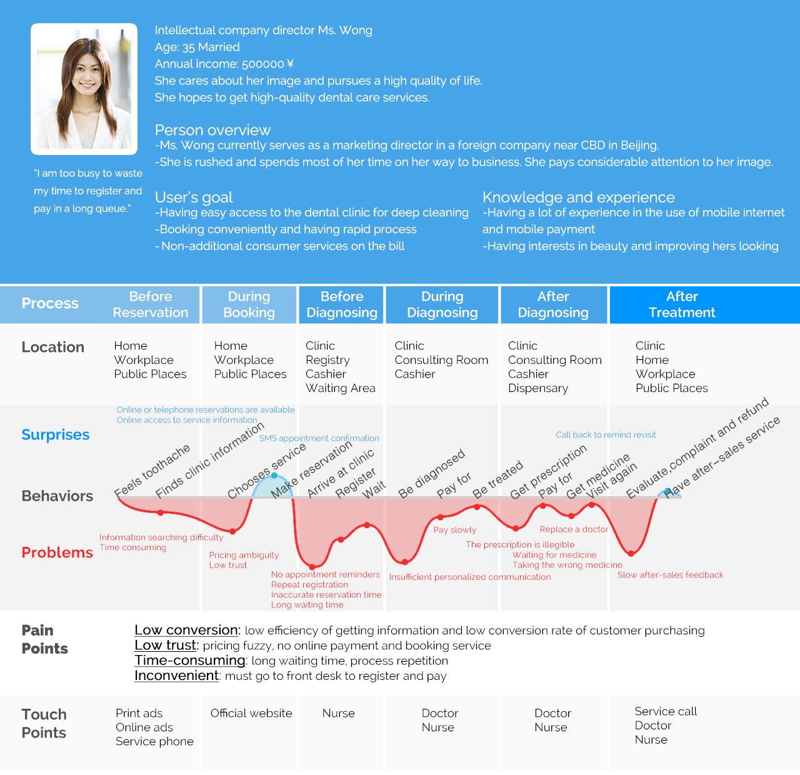

The current customer journey map
After field investigation, the customer journey map was used to find out where the difficulties and users' expectations to find the breakthrough of our solution.
We used stickers to write out what everyone did, thought, felt, heard and touched in the visiting session.
Taking KEWA Dental as our service design target, we first determined the customer and the primary user and then implied various analysis methods to analyze the customer behavior and service flow separately to systemize and visualize the user experience flow. Moreover, we concerned about the users and business touch points and pain points.
Demands systemization and Missions
Mission 1:
Modifying the current customer journey map to improve existing insufficient touch points, find possible new touch points, or redundant some.
Mission 2:
Listing all pain points and select no less than three to resolve in the next step.
The renewed service blueprint
Goal:
To build a new service system and user experience process, and visualize them.
We described the service flow, the service scenario, some service providers, customer persona and user experience process; decomposed the relationship between the front-end and the back-end and the various activities and rearranged their order; combined with stakeholder map to recognize the whole service relationship.
Realization: mobile-end reservation system design

Basis: The existing Web online reservation system
Mission: Building an online reservation platform on mobile-end that fits the using scene
Interaction Design: Mini Program on Wechat
The development of mobile medicine is restricted by the medical system of China, but the stomatology industry is the earliest commercialized marketization in our country. Each year, the market faces 190+ million teeth that need treatment, and the competition for mobile dental medicine is a mirror in the field of mobile medicine, a microcosm. Because dental characteristics determine that no matter how mobile interconnection, communication between doctors and patients, the final treatment must be offline, this is a standard O2O business model that unlike many medical disciplines that can deal with some problems remotely or online.
Information Framework
APP basic demands：
1. Services introduction
2. Consultation appointment
3. Check the record of diagnosis and treatment


{kind=link}